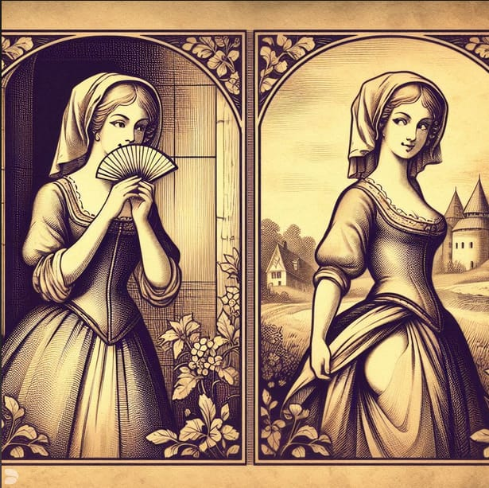

Dante Alighieri viene considerato appartenente ai Fedeli d’Amore, la cui visione trae ispirazione dalla Cabala e dai Sufi tanto nelle allegorie letterarie quanto nel desiderio di assoluto, del quale è forma pure la tensione erotica che in Inferno V mette in sottile relazione i corpi e il libro: è infatti la lettura ad eccitare i due amanti Paolo e Francesca. La tensione erotica e filosofica che anima Jana Černá, figlia della Milena amata da Kafka, verso il suo amante Egon Bondy, è sfacciata e prorompente, così come intenso è il rapporto espresso dalla sua vita travagliata verso l’assoluto della scrittura, testimoniato da quanto pubblicato nel volume “In culo oggi no”. Un incontro tra queste due figure può permettere di comprendere le pulsioni dello scrivere e della sessualità ed eccitare la nostra comprensione ad ogni livello a cui sappia ascendere.
Nessun maggior dolore
che ricordarci del tempo felice
Nella miseria; e ciò sa’l tuo dottore.
Ma s’ha conoscer la prima radice
Del nostro amor tu hai cotanto affetto,
Dirò come colui che piange e dice.
Niente mi eccita di più della speranza in un’opera dalla quale niente verrà eliminato, la speranza in un’opera non censurata, cruda, crudele e mostruosa, ma assoluta. Un’opera che non sarà non dannosa alla salute, che dopo averla consumata farà vomitare e farà cacare, che dopo averla consumata farà venire allo stesso tempo un senso di felicità e di terrore, un’opera che non avrà limiti e che non permetterà che limiti che le vengano imposti, mai e da nessuno. Ma è proprio per questo che non voglio che tu ne allontani la maturazione con dei pregiudizi con sono di un altro mondo e non del nostro. Nessuna puttanata che potrai fare, nessuna assurdità e nessun delitto che commetterai, è un difetto.
Noi leggevamo un giorno per diletto
Di Lancillotto come amor lo strinse:
soli eravamo e sanza alcun sospetto.
Fidati un po’ del buon Dio, lui sa quel che fa, e fidaTI anche un po’ di te stesso, la carenza di consapevolezza dei propri mezzi e la sottovalutazione delle proprie possibilità infatti uno dei peccati mortali, veramente e letteralmente mortali, dei peccati dei quali si muore. Forse anche di più che di sopravvalutazione. In questo senso infatti la modestia non è una virtù, in questo senso la modesta è nel migliore di casi una stupidità, però questo veramente nel migliore dei casi.
Per più fiate li occhi ci sospinse
Quella lettura, e scolorocci il viso;
Ma un sol punto fu quel che ci vinse.
E inoltre, dimmi, per favore, che razza di assurdità è il fatto che non sei qui? Che razza di cretinata è il fatto che in questo momento non Ti posso baciare, che non mi posso stendere accanto a Te, che non Ti posso carezzare ed eccitarmi di Te, che non Ti posso eccitare con la bocca fino all’orgasmo e sentirTi nel ventre e poi ridere insieme a Te del fatto che la barba Ti puzza a tal punto che il bigliettaio in tram avrà un’erezione quando Ti bucherà il biglietto?
Amor, ch’al cor gentile ratto s’apprende,
prese costui della bella persona
che mi fu tolta; e il modo ancor m’offende.
Perché, perlamiseria, non c’è la Tua lingua nella mia fica, quando tanto fortemente e con veemenza ce la voglio, perché non avverto il solletico doloroso dei Tuoi morsi sulla pianta dei piedi, perché non posso mostrarti il culo in modo che Tu lo sfondi, lo mordi, lo picchi e lo cosparga di sperma, perché non posso stare poi distesa accanto a Te e parlare con Te di qualsiasi cosa – dalla filosofia al sesso degli angeli - con naturale confidenza uno accanto all’altra e nel frattempo farti una sega giusto così, per eccesso di vitalità?
Amor, cha nullo amato amar perdona,
mi prese del costui piacer sì forte,
che, come vedi, ancor non m’abbandona.
Perché non posso spompinarTi e portare in bocca lo sperma alla tua bocca perché Tu inghiotta e Ti si blocchi un attimo in gola per via del suonatore penetrante, che mi rimane sempre a lungo sulla lingua, sicché qualsiasi cosa mangio ha il sapore di un prodotto del Tuo uccello, e quando mangio pane e burro il sapore sembra quello di una scopata?
Quando leggemmo il disiato riso
Esser baciato da cotanto amante,
Questi, che mai da me fu diviso,
La bocca mi baciò tutto tremante.
Sta di fatto che in realtà ogni postulato filosofico ha senso per se stesso e ogni definizione poetica è un oggetto di valore, che non è necessario valorizzare ulteriormente dandogli un fine: questi pregiudizi rendono la poesia una serva che debba farci stupidamente felici e la filosofia una ragazza di buona famiglia proletarizzata che si mette a fare la donna di servizio per essere utile: l’una a costruire il ruolo ereditario della nazione, l’altra a sopportare e giustificare tutto il peso dell’imbecillità umana. Non credo e non uscirò mai a credere che sia possibile raggiungere qualcosa per vie così aride.
Galeotto fu il libro e chi lo scrisse:
quel giorno più non vi leggemmo avante.
Voglio passare con Te ore e ore a chiacchierare per poter venire a letto con Te e voglio scopare con Te per arrivare a ore e ore di conversazione, posso parlare con Te di filosofia a letto e mi si mette la fica sull’attenti se ne parliamo a tavola, non è proprio possibile separare e astrarre una cosa dall’altra. Voglio passare con Te ore e ore a chiacchierare per poter venire a letto con Te e voglio scopare con te per arrivare a ore e ore di conversazione.
Amore condusse noi ad una morte.
E caddi come corpo morto cade.
•
Dante Alighieri, Inferno V - vv. 121-132, 100-105, 133-138, 106-142.
Jana Černá, Lettere all’amante [1930 ca], da In culo oggi no, e/o 1992, passim.
Illustrazione: Mosè Bianchi, Paolo e Francesca, 1877 ca.